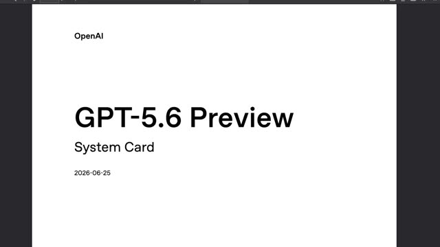
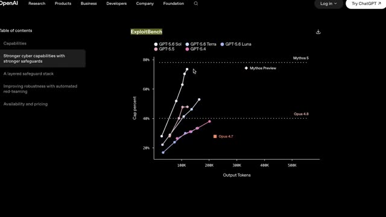
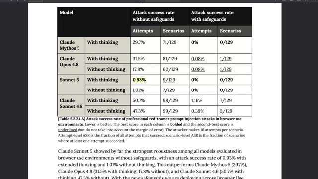

Конспект видео · AI Explained · 2026-07-02 · 18 мин · 105K просмотров Video digest · AI Explained · 2026-07-02 · 18 min · 105K views
Fable 5 против GPT-5.6 Sol: первые результаты Fable 5 vs GPT-5.6 Sol: The Early Results
Смотреть видео ↗Watch the video ↗
Конспект построен по субтитрам; кадры извлечены по таймкодам, отобранным вручную из транскрипта. Digest built from subtitles; frames extracted at timestamps hand-picked from the transcript.
Ключевые тезисыKey theses
- Прямых сравнений Sol и Fable нет — GPT-5.6 в закрытом превью (доступ клиентам согласуется с правительством США). Автор «обратно решает» сравнение через общие референсные точки в системных картах обеих моделей. No head-to-head Sol vs Fable numbers exist — GPT-5.6 is in a gated preview (customer access approved with the US government). The author back-solves the comparison via shared reference points in both system cards.
- Итог обратного решения: Sol чуть слабее Mythos/Fable (HealthBench Professional 60.5% против 66%, вирология 55.5% против 56%, ExploitBench ≈76% против 78%), но тратит ~втрое меньше output-токенов и вдвое дешевле по API — по performance-per-dollar, вероятно, впереди. The back-solved verdict: Sol is slightly behind Mythos/Fable (HealthBench Professional 60.5% vs 66%, virology 55.5% vs 56%, ExploitBench ≈76% vs 78%), but spends ~3x fewer output tokens and costs half as much — likely ahead on performance per dollar.
- Возвращение Fable 5 — с ужесточённым классификатором безопасности: безобидные запросы, включая рутинный кодинг и отладку, стали флагаться заметно чаще. Fable 5 returned with a stricter safety classifier: benign requests, including routine coding and debugging, now get flagged noticeably more often.
- Обвинение в «дистилляционной атаке»: Anthropic заявила, что Alibaba использовала 29 млн обменов с Claude для обучения моделей Qwen. Автор видит в этом стимул лабораториям придерживать новейшие модели для узкого круга — и связывает с идеей OpenAI отдать правительству долю 5%. The "distillation attack" accusation: Anthropic claims Alibaba used 29M Claude exchanges to train Qwen models. The author reads this as an incentive for labs to gate newest models — and links it to OpenAI floating a 5% government stake.
- Скрытая жемчужина — Sonnet 5: устойчивость к prompt-injection в браузерных сценариях <1% успешных атак против ~30% у Mythos 5 и 32% у Opus 4.8 — ещё до наложения safeguards. The hidden gem — Sonnet 5: prompt-injection resistance in browser-use at <1% attack success vs ~30% for Mythos 5 and 32% for Opus 4.8 — even before safeguards.
ТаймкодыTimestamps
| 00:00 | Контекст «странной недели»: возврат Fable, превью Sol, релиз Sonnet 5 The "weird week" context: Fable's return, Sol preview, Sonnet 5 release |
| 03:33 | Цены: Sol — половина API-цены Fable 5 Pricing: Sol at half of Fable 5's API price |
| 04:45 | Закрытое превью: клиентов одобряет правительство; риск концентрации власти Gated preview: government-approved customers; power-concentration risk |
| 06:19 | Обвинение Alibaba в дистилляции через 29 млн обменов с Claude Alibaba accused of distillation via 29M Claude exchanges |
| 09:35 | Terminal Bench 2.1 — заголовочный бенчмарк OpenAI и его ограничения Terminal Bench 2.1 — OpenAI's headline benchmark and its limits |
| 10:41 | Метод «обратного решения» по системным картам (HealthBench, стр. 300) ★ The back-solving method via system cards (HealthBench, p. 300) ★ |
| 11:51 | ExploitBench: качество против потраченных токенов — победа Sol по цене ★ ExploitBench: capability vs tokens spent — Sol wins on cost ★ |
| 15:48 | Prompt-injection: таблица атак из системной карты Sonnet 5 ★ Prompt injection: the attack table from Sonnet 5's system card ★ |
| 16:52 | Работа Stanford/MIT/Anthropic: почему крупнейшие модели всегда выигрывают Stanford/MIT/Anthropic paper: why the largest models keep winning |
★ — моменты с демонстрациями; кадры ниже. ★ — demonstration moments; frames below.
Кадры демонстрацийDemo frames


